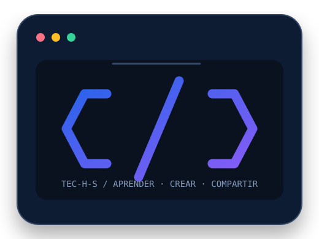
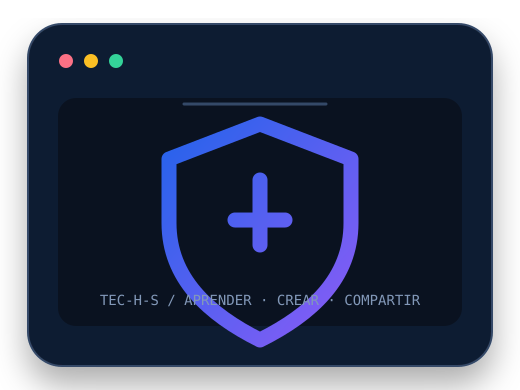

Programación
Aprende lenguajes como Python, JavaScript, HTML y CSS desde cero.
Explorar área →Aprende programación, inteligencia artificial, ciberseguridad y mucho más. El conocimiento tecnológico comienza aquí.
const futuro = {
conocimiento: "Aprender",
habilidades: "Programar",
innovacion: "Crear"
};
function construirFuturo() {
return "El límite es tu imaginación";
}
0 de 15 rutas completadas
El progreso se guarda en este navegador.
Descubre diferentes áreas tecnológicas y desarrolla nuevas habilidades.

Aprende lenguajes como Python, JavaScript, HTML y CSS desde cero.
Explorar área →
Conoce la inteligencia artificial, el aprendizaje automático y la ciencia de datos.
Explorar área →
Aprende sobre seguridad informática, redes y protección de información.
Explorar área →
Descubre SQL, MySQL, almacenamiento y administración de datos.
Explorar área →Encuentra contenidos que te ayudarán a mejorar tus conocimientos tecnológicos.
Aprende a crear la estructura de una página web.
Aprender más →Descubre cómo diseñar páginas web modernas y atractivas.
Aprender más →Aprende a crear páginas web interactivas.
Aprender más →Practica variables, condiciones, bucles y funciones con ejemplos guiados.
Empezar Python →Comprende cómo los datos ayudan a un modelo a reconocer patrones.
Abrir lección →Aprende a verificar mensajes sospechosos y proteger tus cuentas.
Abrir lección →Practica SELECT, filtros y ordenamiento de resultados.
Abrir lección →Identifica CPU, memoria, almacenamiento y otros componentes.
Aprender hardware →Instala desde fuentes confiables y aprende a mantener programas.
Aprender software →Organiza archivos, revisa actualizaciones y prepara respaldos.
Aprender Windows →Guía oficial de instalación, licencia y primeras tareas.
Aprender Office →Hábitos seguros de limpieza, actualización y respaldo.
Ver mantenimiento →Comprende el Wi-Fi y soluciona problemas habituales.
Aprender redes →Prueba la terminal y consulta las instrucciones oficiales de Ubuntu.
Aprender Linux →No se encontraron recursos. Intenta con otra búsqueda.
Conceptos clave explicados con palabras sencillas.
Una secuencia ordenada de pasos para resolver una tarea, como las instrucciones de una receta.
Un nombre que permite guardar y consultar un valor dentro de un programa.
Lenguaje de marcado que organiza el contenido de una página web: títulos, párrafos, enlaces e imágenes.
Sistema ajustado con ejemplos para reconocer patrones y producir una estimación o resultado.
Engaño que imita a una fuente confiable para intentar obtener datos o que abras un enlace dañino.
Conjunto organizado de información que se puede consultar y actualizar de forma estructurada.
Lenguaje usado para consultar y administrar datos en bases de datos relacionales.
Diseñar sitios para que puedan usarlos personas con distintas capacidades y formas de navegación.
Tec-H-S es un proyecto educativo independiente para quienes quieren comprender la tecnología desde sus fundamentos y practicar con ejemplos claros.
Cada área combina explicaciones, ejemplos y actividades para avanzar desde los conceptos iniciales hacia proyectos propios. Tec-H-S está pensado para estudiantes y personas curiosas que quieren desarrollar habilidades digitales con bases claras.
Propón temas que te gustaría aprender, señala conceptos que necesiten otra explicación y sugiere ejemplos o tutoriales para futuras lecciones.